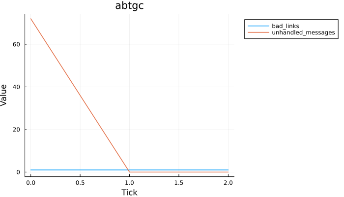
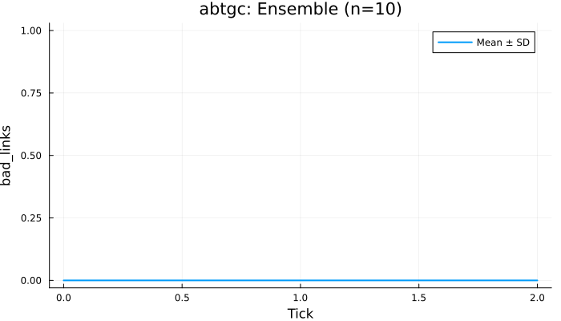
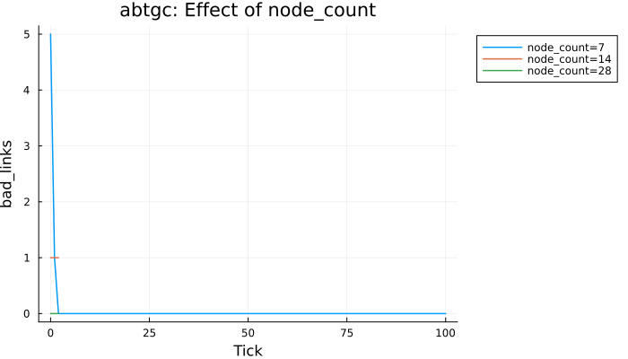

ABTgc
Overview
This vignette demonstrates the ABTgc model implemented in ArkModelZoo.jl using the Ark.jl ECS framework.
Parameters
| Parameter | Type | Default | Description |
|---|---|---|---|
node_count | Int | 14 | node count |
edges_to_nodes | Float64 | 3.19 | edges to nodes |
possible_colors | Int | 6 | possible colors |
grid_size | Int | 33 | grid size |
max_ticks | Int | 100 | max ticks |
Source Code
The Julia code to run this model:
using ArkModelZoo
_, trajectory = run_abtgc()Time Series

Ensemble Runs
Ten replicates with different random seeds, showing mean ± standard deviation.

Parameter Sensitivity
Varying node_count.

Appendix: Source Code
This model is implemented in the Ark.jl Entity-Component-System (ECS) framework. The code is split into five files, each with a distinct role:
- Parameters: a mutable struct holding all configurable values.
- Components: lightweight data types attached to individual entities (agents).
- Resources: world-level shared state accessible to all systems.
- Systems: functions that operate on entities each tick, defining model behavior.
- Model: wiring that assembles the world, registers resources and systems, and provides the run entry point.
Parameters (parameters.jl)
The parameter struct uses @kwdef so that every field has a default value and can be overridden by keyword. These defaults match the original NetLogo model’s slider settings.
Base.@kwdef mutable struct ABTParams
node_count::Int = 14
edges_to_nodes::Float64 = 3.19
possible_colors::Int = 6
grid_size::Int = 33
max_ticks::Int = 100
seed::Int = 42
endComponents (components.jl)
Components are lightweight data types attached to individual entities (agents). Mutable structs hold per-entity state, while empty tag structs act as markers for the ECS query system to efficiently filter entities.
struct ABTDummy endResources (resources.jl)
Resources are world-level singletons shared across all systems, used for global state and aggregate statistics.
# Message types: (:ok, sender, value), (:nogood, sender, nogood_list), (:new_neighbor, sender)
const ABTMessage = Tuple{Symbol, Int, Any}
mutable struct ABTState
n_agents::Int
value::Vector{Int} # current color 0..5
adj::Vector{Set{Int}} # undirected adjacency
message_queue::Vector{Vector{ABTMessage}}
local_view::Vector{Dict{Int,Int}} # agent → (neighbor → value)
no_goods::Vector{Vector{Dict{Int,Int}}} # agent → list of nogood constraints
x::Vector{Float64}
y::Vector{Float64}
end
function ABTState()
ABTState(0, Int[], Set{Int}[], Vector{ABTMessage}[], Dict{Int,Int}[], Vector{Dict{Int,Int}}[], Float64[], Float64[])
end
function _abt_add_agent!(state::ABTState, val::Int, x::Float64, y::Float64)
state.n_agents += 1
push!(state.value, val)
push!(state.adj, Set{Int}())
push!(state.message_queue, ABTMessage[])
push!(state.local_view, Dict{Int,Int}())
push!(state.no_goods, Vector{Dict{Int,Int}}())
push!(state.x, x)
push!(state.y, y)
return state.n_agents
end
mutable struct ABTStats
bad_links::Int
unhandled_messages::Int
end
ABTStats() = ABTStats(0, 0)Systems (systems.jl)
Systems contain the model logic and execute in a defined order each tick. Each system struct implements either initialize! (run once at setup) or update! (run every tick).
# --- Helpers ---
function _abt_build_network!(rng, state::ABTState, edges_to_nodes::Float64)
n = state.n_agents
target_edges = round(Int, edges_to_nodes * n)
# Handle lonely nodes first: nodes with 0 edges get priority
for _ in 1:target_edges
# Find lonely nodes (degree 0)
lonely = [i for i in 1:n if isempty(state.adj[i])]
if !isempty(lonely)
src = lonely[rand(rng, 1:length(lonely))]
else
src = rand(rng, 1:n)
end
# Find unlinked nodes with different color
candidates = [j for j in 1:n if j != src && !(j in state.adj[src]) && state.value[j] != state.value[src]]
if isempty(candidates)
# Fallback: any unlinked node
candidates = [j for j in 1:n if j != src && !(j in state.adj[src])]
end
isempty(candidates) && continue
tgt = candidates[rand(rng, 1:length(candidates))]
push!(state.adj[src], tgt)
push!(state.adj[tgt], src)
end
end
function _abt_count_bad_links(state::ABTState)
count = 0
for i in 1:state.n_agents
for j in state.adj[i]
if j > i && state.value[i] == state.value[j]
count += 1
end
end
end
return count
end
function _abt_count_unhandled(state::ABTState)
total = 0
for i in 1:state.n_agents
total += length(state.message_queue[i])
end
return total
end
function _abt_send_ok!(state::ABTState, sender::Int)
for nb in state.adj[sender]
push!(state.message_queue[nb], (:ok, sender, state.value[sender]))
end
end
function _abt_check_value!(rng, state::ABTState, agent::Int, all_colors::Vector{Int})
# Find a value consistent with local_view and no_goods
for c in all_colors
if _abt_consistent(state, agent, c)
if state.value[agent] != c
state.value[agent] = c
_abt_send_ok!(state, agent)
end
return true
end
end
# No consistent value found — backtrack
return false
end
function _abt_consistent(state::ABTState, agent::Int, color::Int)
# Check against local_view: no neighbor should have same color
for (nb, nb_val) in state.local_view[agent]
if nb_val == color
return false
end
end
# Check against no_goods
for ng in state.no_goods[agent]
# A nogood {i=>vi, j=>vj, ...} is violated if all assignments match
# and the agent's candidate color matches its entry
all_match = true
for (k, v) in ng
if k == agent
if color != v
all_match = false
break
end
else
lv = get(state.local_view[agent], k, nothing)
if lv === nothing || lv != v
all_match = false
break
end
end
end
if all_match
return false
end
end
return true
end
function _abt_handle_ok!(state::ABTState, agent::Int, sender::Int, val::Int, all_colors::Vector{Int}, rng)
state.local_view[agent][sender] = val
if !_abt_consistent(state, agent, state.value[agent])
_abt_check_value!(rng, state, agent, all_colors)
end
end
function _abt_handle_nogood!(rng, state::ABTState, agent::Int, sender::Int, nogood_list::Vector{Dict{Int,Int}}, all_colors::Vector{Int})
for ng in nogood_list
push!(state.no_goods[agent], ng)
# Add any unknown agents as neighbors
for k in keys(ng)
if k != agent && !(k in state.adj[agent])
push!(state.adj[agent], k)
push!(state.adj[k], agent)
# Request their value
push!(state.message_queue[k], (:new_neighbor, agent, nothing))
end
end
end
# Remove old value entry for sender
state.local_view[agent][sender] = state.value[sender]
_abt_check_value!(rng, state, agent, all_colors)
end
function _abt_handle_new_neighbor!(state::ABTState, agent::Int, sender::Int)
# Send current value to new neighbor
push!(state.message_queue[sender], (:ok, agent, state.value[agent]))
end
function _abt_backtrack!(state::ABTState, agent::Int, all_colors::Vector{Int})
# Build nogood from local_view + own assignment
ng = Dict{Int,Int}()
for (k, v) in state.local_view[agent]
ng[k] = v
end
if isempty(ng)
return # Cannot backtrack further
end
# Send nogood to lowest-priority agent in the nogood
# Priority = agent id (lower id = higher priority)
target = maximum(keys(ng))
push!(state.message_queue[target], (:nogood, agent, [ng]))
# Remove target from local_view
delete!(state.local_view[agent], target)
# Garbage collection: remove no_goods referencing target
filter!(ngi -> !haskey(ngi, target), state.no_goods[agent])
end
# --- Systems ---
struct InitABTSystem <: System end
function initialize!(::InitABTSystem, world::World)
params = get_resource(world, ABTParams)
rng = get_resource(world, RNGResource).rng
state = get_resource(world, ABTState)
stats = get_resource(world, ABTStats)
all_colors = collect(0:(params.possible_colors - 1))
# Create agents at random positions on a grid
for _ in 1:params.node_count
val = rand(rng, 0:(params.possible_colors - 1))
x = rand(rng) * Float64(params.grid_size)
y = rand(rng) * Float64(params.grid_size)
_abt_add_agent!(state, val, x, y)
end
# Build network
_abt_build_network!(rng, state, params.edges_to_nodes)
# Initialize ABT: each agent sends "ok" to neighbors
for i in 1:state.n_agents
# Build initial local_view from neighbors' current values
for nb in state.adj[i]
state.local_view[i][nb] = state.value[nb]
end
end
# Each agent checks consistency and sends ok messages
for i in 1:state.n_agents
if !_abt_consistent(state, i, state.value[i])
_abt_check_value!(rng, state, i, all_colors)
else
_abt_send_ok!(state, i)
end
end
stats.bad_links = _abt_count_bad_links(state)
stats.unhandled_messages = _abt_count_unhandled(state)
return nothing
end
struct ABTGoSystem <: System end
function update!(::ABTGoSystem, world::World)
params = get_resource(world, ABTParams)
rng = get_resource(world, RNGResource).rng
state = get_resource(world, ABTState)
stats = get_resource(world, ABTStats)
all_colors = collect(0:(params.possible_colors - 1))
# Find agents with non-empty queues
important = [i for i in 1:state.n_agents if !isempty(state.message_queue[i])]
if isempty(important)
get_resource(world, Terminate).stop = true
return nothing
end
for agent in important
while !isempty(state.message_queue[agent])
msg = popfirst!(state.message_queue[agent])
mtype, sender, payload = msg
if mtype == :ok
_abt_handle_ok!(state, agent, sender, payload::Int, all_colors, rng)
elseif mtype == :nogood
_abt_handle_nogood!(rng, state, agent, sender, payload::Vector{Dict{Int,Int}}, all_colors)
elseif mtype == :new_neighbor
_abt_handle_new_neighbor!(state, agent, sender)
end
end
end
stats.bad_links = _abt_count_bad_links(state)
stats.unhandled_messages = _abt_count_unhandled(state)
return nothing
end
struct ABTTerminationSystem <: System end
function update!(::ABTTerminationSystem, world::World)
params = get_resource(world, ABTParams)
tick = get_resource(world, Tick)
if tick.tick + 1 >= params.max_ticks
get_resource(world, Terminate).stop = true
end
return nothing
endModel (model.jl)
The model file assembles all pieces: it creates the ECS World with the required component types, registers resources, builds the Scheduler with systems in execution order, and exposes the public run entry point. The observer pattern records the trajectory each tick.
function abtgc_world(; initial_capacity::Int = 128)
return World(ABTDummy; initial_capacity=initial_capacity, allow_mutable=true)
end
function abtgc_systems()
return (
InitABTSystem(),
ABTGoSystem(),
ABTTerminationSystem(),
)
end
function abtgc_model(params::ABTParams = ABTParams())
world = abtgc_world()
_add_standard_resources!(world, params)
add_resource!(world, ABTState())
add_resource!(world, ABTStats())
scheduler = Scheduler(world, abtgc_systems())
initialize!(scheduler)
return scheduler
end
struct ABTObserver end
function abtgc_headers(::ABTObserver)
return ["bad_links", "unhandled_messages"]
end
function abtgc_values(::ABTObserver, world::World)
stats = get_resource(world, ABTStats)
return Float64[stats.bad_links, stats.unhandled_messages]
end
function run_abtgc(; params::ABTParams = ABTParams(), observe::Bool = true)
return _run_model(abtgc_model, ABTObserver(), abtgc_values; params, observe)
end